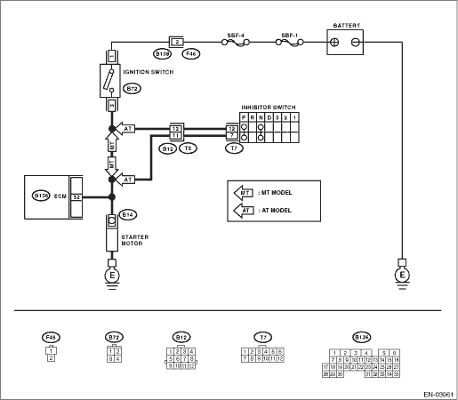

ENGINE (DIAGNOSTICS)(H4DOTC) > Diagnostic Procedure with Diagnostic Trouble Code (DTC)
DTC DETECTING CONDITION:
Two consecutive driving cycles with fault
TROUBLE SYMPTOM:
Failure of engine to start
CAUTION:
After repairing or replacing the defective part, perform the Clear Memory Mode  and Inspection Mode .
and Inspection Mode .
WIRING DIAGRAM:
• LHD model


• RHD model
1.CHECK OPERATION OF STARTER MOTOR.
|
Does the starter motor operate?
|
Repair the short to power supply in starter motor circuit. After repair, replace the ECM.
|
Check the starter motor circuit.
|